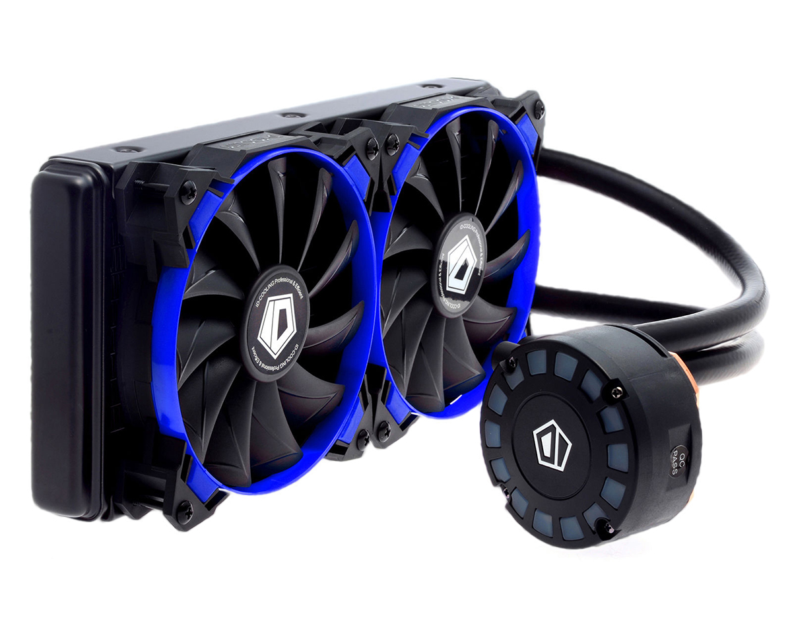

Computer cooling is required to remove the waste heat produced by computer components, to keep components within permissible operating temperature limits. Components that are susceptible to temporary malfunction or permanent failure if overheated include integrated circuits such as central processing units (CPUs), chipsets, graphics cards, and hard disk drives.
Components are often designed to generate as little heat as possible, and computers and operating systems may be designed to reduce power consumption and consequent heating according to workload, but more heat may still be produced than can be removed without attention to cooling. Use of heatsinks cooled by airflow reduces the temperature rise produced by a given amount of heat. Attention to patterns of airflow can prevent the development of hotspots. Computer fans are widely used along with heatsink fans to reduce temperature by actively exhausting hot air. There are also more exotic cooling techniques, such as liquid cooling. All modern day processors are designed to cut out or reduce their voltage or clock speed if the internal temperature of the processor exceeds a specified limit.
Cooling may be designed to reduce the ambient temperature within the case of a computer, such as by exhausting hot air, or to cool a single component or small area (spot cooling). Components commonly individually cooled include the CPU, graphics processing unit (GPU) and the northbridge.
Poor airflow including turbulence due to friction against impeding components such as ribbon cables, or incorrect orientation of fans, can reduce the amount of air flowing through a case and even create localized whirlpools of hot air in the case. In some cases of equipment with bad thermal design, cooling air can easily flow out through "cooling" holes before passing over hot components; cooling in such cases can often be improved by blocking of selected holes.